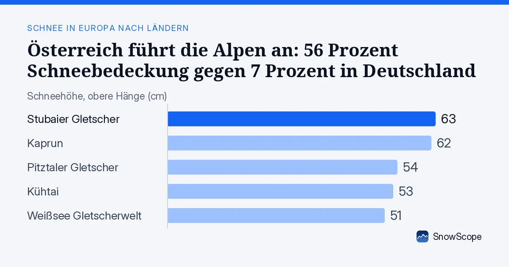
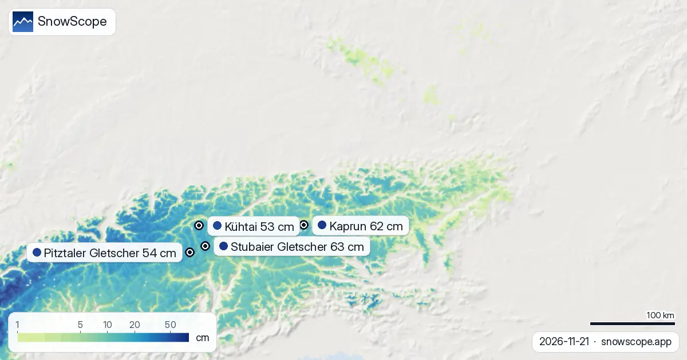

Österreich führt die Alpen an: 56 Prozent Schneebedeckung gegen 7 Prozent in Deutschland
Österreich ist schneereich, während Deutschland größtenteils ausgeapert bleibt. Mit 29.110 Quadratkilometern unter Schnee und Neuschneemengen von 47 Zentimetern in Vorarlberg in den letzten drei Tagen hat Österreich einen deutlichen Vorteil aufgebaut, während Herbststürme die Alpen umgestalten.
Die Live-Schneeprognose für Stubaier Gletscher in der SnowScope-AppSchneehöhen, Pulverschnee-Alarme und 3D-Karte, gratis.
Österreich dominiert; Deutschland kämpft
Der Unterschied ist markant. Österreichs Schneedecke liegt bei 56 Prozent der gemessenen Fläche; Deutschland schafft nur 7 Prozent. Das ist kein Zufall – es spiegelt die Topografie und Sturmwege wider, die wir jede Saison in den Bergen sehen. Feuchte Atlantiksysteme drücken nach Osten und entladen ihre schwersten Lasten auf dem hohen, steilen Gelände Westösterreichs, bevor die Luft über den Bayerischen Ebenen austrocknet.
In absoluten Zahlen hat Österreich heute Schnee auf 29.110 Quadratkilometern, gestern waren es 25.310. Dieser Sprung von 3.800 Quadratkilometern an nur einem Tag zeigt, wie schnell sich die Saison verschieben kann. Deutschlands Spitzenreiter, die Zugspitze, liegt bei 81 Zentimetern, aber sie ist eine Insel; die tieferen Hänge rundherum sind noch braun. Österreichs Skigebiete bilden ein zusammenhängendes weißes Band von West nach Ost.
| Land | Weiß | Schneereichstes Skigebiet | Nächste 7 Tage |
|---|---|---|---|
| Österreich | 56 % | Stubaier Gletscher | 35 cm |
| Schweiz | 64 % | Anzère | 74 cm |
| Deutschland | 7 % | Zugspitze | 26 cm |

Vorarlberg, Kärnten und das Ötztal führen an
Drei Brennpunkte stechen hervor. Vorarlberg, an der Schweizer Grenze gelegen und dem ankommenden Sturm ausgesetzt, erhielt in 72 Stunden 47 Zentimeter. Das ist echter Frühjahrschnee, die Art, die liegenbleibt, weil kalte Luft angekommen ist. Kärnten, weiter südlich, bekam 33 Zentimeter; die Ötztal-Alpen, eine hohe Gletscherzone, die wir gut kennen, erhielten 31 Zentimeter.
Diese Zahlen erzählen eine Geschichte der Sturmgeometrie. Der meiste Schnee fiel dort, wo Orografie Luft am schnellsten nach oben zwingt und wo die Höhe die Temperaturen unter dem Gefrierpunkt hält. Tiefere Täler und Vorberge, das Revier der deutschen Skigebiete, erlebten weniger Hebung und mildere Bedingungen.

Gletscher führen; mittlere Höhen noch marginal
Unter den benannten Skigebieten hält der Stubaier Gletscher 63 Zentimeter, davon 24 Zentimeter in den letzten drei Tagen. Der Pitztaler Gletscher liegt bei 54 Zentimetern (26 cm Neuschnee); Kühtai bei 53 Zentimetern. Kaprun und Weißsee Gletscherwelt runden die Top Fünf ab. Alle fünf gemessenen Skigebiete liegen jetzt auf oder über ihrem Klimamittel für Ende November.
Die Höhe ist entscheidend. Über 2.000 Metern liegt die Schneemächtigkeit durchschnittlich bei 19 Zentimetern bei vollständiger Bedeckung. Zwischen 1.500 und 2.000 Metern liegen 10 Zentimeter auf dem Boden und die Bedeckung ist total. Sinke auf 1.000–1.500 Meter und das Bild zerfasert: nur 3 Zentimeter mittlere Mächtigkeit und 63 Prozent Bedeckung. Unter 1.000 Metern ist Schnee selten (9 Prozent Bedeckung, fast null Mächtigkeit). Die Schneegrenze liegt um 1.100 Meter; wer plant, in tieferen Höhen zu fahren, sollte mit Fels, Gras und Geduld rechnen.
Mehr Schnee kommt, 26. November ist der Höhepunkt
Der schneepflüchtigste Tag wird der 26. November, wenn 17 Zentimeter in der gemessenen Region wahrscheinlich sind. Das ist keine Flaute; es ist eine Vertiefungstrend.
Schneefall in der zweiten Woche (Tage 8–14) fällt auf 9 Zentimeter, was auf eine ruhigere Phase Mitte bis Ende Dezember hindeutet. Vorerst aber liefert das System.
Was die Zahlen über Frühnovember-Schnee verraten
Vor einer Woche hielten nur 19.900 Quadratkilometer Österreichs Schnee. Heute sind es 29.110. Diese Ausdehnung von 9.210 Quadratkilometern in sieben Tagen ist das Zeichen eines echten Übergangs von Herbst zu Winter. Es ist kein Freak-Warm-Spell-Rebound; es ist die Ankunft kalter Luft und organisierter Feuchte.
Die Schweiz hingegen liegt bei 64 Prozent Schneebedeckung und sieht 74 Zentimeter in den nächsten sieben Tagen. Deutschland bleibt marginal bei 7 Prozent, mit 26 Zentimetern Vorhersage. Österreich mit 56 Prozent und 35 Zentimetern voraus liegt direkt in der Handlungszone – noch nicht Winter-tief, aber entscheidend schneereich für Ende November.
Was das vor Ort bedeutet
Frühjahrschnee ist dünn und liegt oft auf nacktem Fels und spärlicher Vegetation. Die 47 Zentimeter in Vorarlberg klingen großzügig, bis du dich erinnerst, dass in ein paar Wochen 100 Zentimeter Routine sind; vorerst ist das hervorragend. Gletscher und hohe Pässe haben genug zum Fahren und zum Aufbau einer Basis. Skigebiete in mittlerer Höhe, besonders solche unter 1.500 Metern, sind marginal; Schnee liegt fleckig und hält möglicherweise nicht, wenn der November mild wird.
Die Sturmroute ist günstig. Wenn die Vorhersage hält und der 26. November 17 Zentimeter bringt, wird die Grundlage schnell tiefer.
Tipps für Skifahrer
- Ziele Höhe und Gletscher an: Stubaier Gletscher, Pitztaler Gletscher und Kühtai alle liegen über 2.400 Metern und haben 50+ Zentimeter auf stabiler, kalter Basis. Fahre über 2.000 Metern für die beste und durchgehendste Bedeckung.
- Achte auf die tieferen Pisten: Zonen zwischen 1.000 und 1.500 Metern haben bestenfalls fleckigen Schnee; erkunde das Gelände sorgfältig auf Felsen und raues Untergrund. Skilehrer und lokales Wissen sind essentiell.
- Verfolge die Vorhersage für 26. November: wenn dieser Tag wie vorhergesagt liefert, werden Frühjahrtouren und Hochgebirgs-Skitage in der folgenden Woche deutlich besser.
- Konsultiere das offizielle Lawinenbulletin vor jeder Tiefschneeauffahrt, besonders in steilen Rinnen über 2.000 Metern, wo Neuschnee auf älterem Herbsteis aufbaut.
- Erwarte schnelle Veränderungen: Frühnovember-Schneemächtigkeit kann je nach Exposition und Höhe wild variieren. Was heute fahrbar ist, kann sich mit dem nächsten Windwechsel oder Wärmewelle ändern.
Zu diesen Zahlen
Die Schneehöhen der Skigebiete sind der meiste Schnee in den oberen Hängen am angegebenen Tag; es sind Schätzungen für eine Fläche, keine Messung an einem Punkt. Prognosen können sich ändern. Lies vor dem Freeriden immer den offiziellen Lawinenlagebericht.
Diesen Bericht zitieren
Für Forschung, Lehre oder Presse: Zahlen und Grafiken sind unter CC BY 4.0 mit dieser Quellenangabe frei nutzbar.
SnowScope (2026), Österreich führt die Alpen an: 56 Prozent Schneebedeckung gegen 7 Prozent in Deutschland, https://snowscope.app/blog/de/2026/11/austria-snow-vs-neighbours-21-november-2026.html, abgerufen am 2026-11-21
SnowScope (Atlas Labs). (2026, November 21). Österreich führt die Alpen an: 56 Prozent Schneebedeckung gegen 7 Prozent in Deutschland. SnowScope snow reports. https://snowscope.app/blog/de/2026/11/austria-snow-vs-neighbours-21-november-2026.html
BibTeX
@misc{snowscope2026austriasnowvsneighbours2,
author = {{SnowScope (Atlas Labs)}},
title = {Österreich führt die Alpen an: 56 Prozent Schneebedeckung gegen 7 Prozent in Deutschland},
year = {2026},
month = nov,
howpublished = {\url{https://snowscope.app/blog/de/2026/11/austria-snow-vs-neighbours-21-november-2026.html}},
note = {Published 2026-11-21 12:07 UTC; accessed 2026-11-21}
}· CC BY 4.0 · Methoden, Daten und Werkzeuge →
Stubaier Gletscher: Schnee und Temperatur nach Höhe, dieser Winter vs letzter (Werkzeuge) →
Stubaier Gletscher folgen
Gratis: eine Nachricht, wenn Neuschnee kommt, und jeden Morgen die Vorhersage.